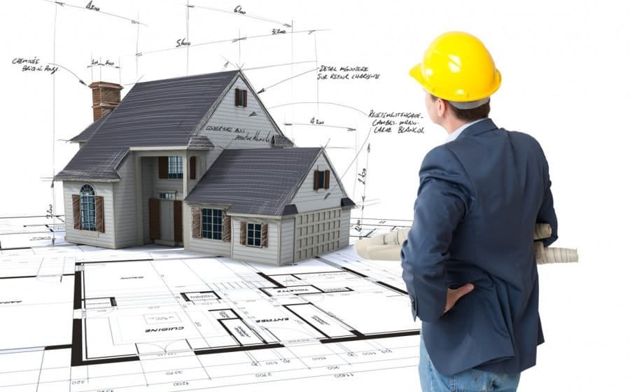

A házépítés összetett folyamat, amely több szakaszból áll. Először a tervezés történik meg, ahol az építész és a mérnökök megalkotják az alaprajzot és a szükséges engedélyeket beszerzik.
Ezután az alapozás következik, amely a ház stabilitását biztosítja. Az alap elkészülte után felhúzzák a falakat, majd a födém és a tetőszerkezet kerül a helyére. A szerkezetkész állapot után jönnek a belső munkálatok: vezetékek, szigetelés, burkolatok és festés.
Végül a nyílászárók, bútorok és egyéb kiegészítők beépítésével a ház lakhatóvá válik. Az egész folyamat hónapokat vagy akár éveket is igénybe vehet, attól függően, hogy milyen méretű és bonyolultságú az építkezés.
A házépítés előtt el kell dönteni, hogy milyen típusú házat szeretnénk építeni.
A könnyűszerkezetes, kész házak valamennyi szempontnak megfelelnek, és rendkívül népszerűek a megrendelők mai modern igényeikhez igazítva.
A Lapra Szerelt Ház.hu oldalon részletes információt kapunk a technológiáról és útmutatást a tervezéstől egészen a kivitelezésig.